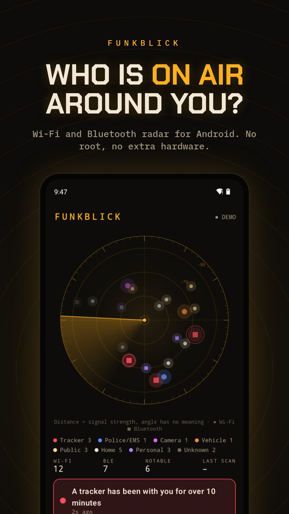

WI-FI · BLUETOOTH · ANDROID
Wi-Fi and Bluetooth radar for Android
Funkblick is a Wi-Fi/Bluetooth scanner and BLE scanner app: it shows every network and Bluetooth device your phone can hear, says who made it and what it probably is, and speaks up when something deserves attention: a tracker that has been with you for ten minutes, a camera running its own Wi-Fi, a speed camera ahead. No root, no account, open source.
Download the APKSource on GitHub
Free, Android 8.0 or newer, runs on GrapheneOS without Google services. No account. The app fetches its own updates from GitHub.



What it does
Radar
Every Wi-Fi network and Bluetooth device in range, by signal strength. Circle = Wi-Fi, square = Bluetooth, colour = kind.
Tracker protection
AirTag, SmartTag, Tile, Chipolo, Google Find My, Pebblebee. Warns when one stays with you for over 10 minutes.
More →Cameras
Finds cameras that run their own Wi-Fi, and camera makers like Hikvision, EZVIZ or Ring.
More →Car mode
Big numbers, spoken alerts, fixed speed cameras from OpenStreetMap, vehicle routers and possible public safety gear.
More →Channel tips
Shows which channel is the quietest where you are. EU channels 1 to 13, DFS hints.
More →Logs and export
Every session saved as JSON on the phone. Export as CSV, JSON or an AI debrief to paste into ChatGPT or Claude.
What Funkblick can't do
- No direction. A phone only measures how strong a signal is. The angle on the radar is a fixed spot per device, not a compass.
- Access points only. Android lists Wi-Fi routers and hotspots, not devices that are merely connected. A camera on someone's home network stays invisible.
- No police radio. Police and EMS talk over TETRA or P25, which no phone can receive. Funkblick only sees the Wi-Fi and Bluetooth of their gear, if it has any.
- Random addresses. Phones and trackers change their Bluetooth address. Funkblick then reads what the device broadcasts instead of guessing the maker.
Install
- Download Funkblick.apk on your phone and open it. Allow installs from your browser if Android asks.
- Open Funkblick and tap Start scan. Allow location (Android hands out Wi-Fi results only with it) and nearby devices.
- Or tap open the demo first to see the radar with invented surroundings.
Questions
Does it need root?
No. Funkblick uses the Wi-Fi and Bluetooth scan every Android phone has. No root, no extra hardware, no account.
Does it work on GrapheneOS?
Yes. Funkblick is built as a GrapheneOS app: plain Android APIs, no Google Play services. Location and nearby-devices permission are enough, a setup checklist shows what is missing.
Is it an RF scanner app?
For the Wi-Fi and Bluetooth bands, yes: a Wi-Fi scanner (Android 8 and up) and a Bluetooth scanner, Android's own radios, no extra hardware. It can't hear police radio, FM or mobile networks.
Does my data leave the phone?
No. Scans, logs and positions stay on the phone. The only network request is the update check against GitHub Releases.
Is it a copy of SØPHIA?
No, it is an open-source app with similar features and some of its own. See Funkblick vs. SØPHIA.